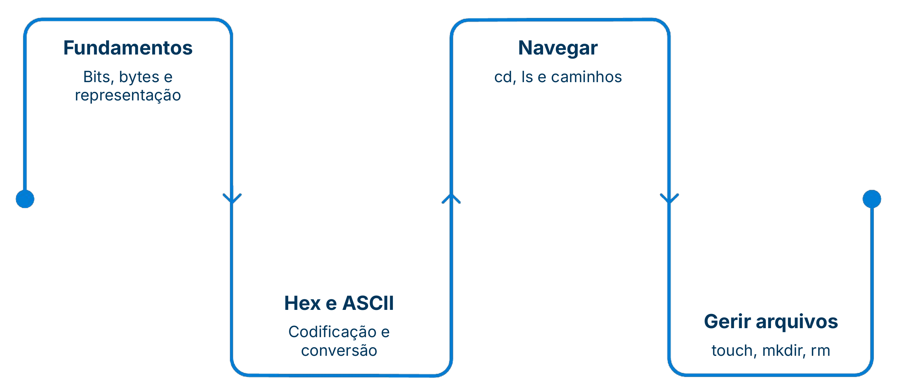

03 - Terminal e Linguagem de Máquina
Prof. Luan Lourenço
Cronograma do semestre
![Tabela do cronograma do semestre com aula, data e conteúdo: 1 (19/AGO) Sistema Operacional - GUI e CLI; 2 (26/AGO) WSL 2 - Virtualização Linux; 3 (02/SET) Terminal e Linguagem da Máquina, destacada; 4 (09/SET) Versionamento e Git; 5 (16/SET) Git e GitHub; 6 (23/SET) Revisão; 30/SET Prova 1º Bimestre; 7 (07/OUT) Fundamentos de Python; 8 (14/OUT) Estrutura de Dados; 9 (21/OUT) Paradigma Orientado a Objetos; 10 (28/OUT) OOP - Os 3 Pilares; 11 (04/NOV) Object Calisthenics; 12 (11/NOV) Arquitetura de Código; 13 (18/NOV) Ramificação de Carreira; 14 (25/NOV) Revisão; 02/DEZ Prova 2º Bimestre; 09/DEZ Prova Sub; 16/DEZ Exame.](img/cronograma-semestre.jpg)
Bits, Bytes e o Terminal Linux
O que o computador realmente enxerga — e como navegar nele pelo terminal.

Por que tudo vira 0 e 1?
Um processador é um circuito elétrico. Só dois estados são possíveis:
Ligado → 1
Desligado → 0
Texto, imagem, som, programa — tudo precisa ser traduzido para sequências de 0s e 1s.
Esse sistema se chama sistema binário. Cada estado individual é um bit — contração de binary digit.
Bit, Byte e Octeto
A menor unidade de informação. Vale 0 ou 1, nunca outra coisa.
Conjunto de 8 bits tratados como uma única unidade. O bloco fundamental do armazenamento.
Sinônimo formal de byte, muito usado em redes (ex.: cada número de um IPv4 é um octeto).
Convertendo Binário ↔ Decimal
Cada posição de um byte representa uma potência de 2. Some apenas as posições onde o bit vale 1:
8 + 2 = 10 em decimal. O caminho inverso: encaixe as maiores potências de 2 possíveis até sobrar zero.
Hexadecimal: Atalho para o Binário
16 = 2⁴ → cada dígito hex representa exatamente 4 bits (um nibble).
0–9 cobrem as dez primeiras combinações
A–F cobrem as seis restantes (A=10 … F=15)
Um byte inteiro cabe em dois dígitos hex
Exemplo: 01000001 em binário = 41 em hex = 65 em decimal = letra "A"
Cores em CSS usam hex: #FF0000 é vermelho puro — dois dígitos por canal R, G, B.
Por que 256 valores em um byte?
Análise Combinatória — quantas sequências diferentes é possível formar com p posições, cada uma com n opções?
- A contagem começa em 0 (
00000000já é válido) - Logo o intervalo vai de 0 a 255, não de 1 a 256
8
256
0–255
A Tabela ASCII
O mesmo byte pode ter significados diferentes — depende de como o programa o interpreta.
ASCII define qual caractere corresponde a cada valor de 0 a 255. O byte
01000001 pode ser:O número 65 (decimal)
A letra A (caractere)
A diferença entre "A" (65) e "a" (97) é exatamente 32 — padrão da tabela ASCII, explorável em código.
De Byte a Gigabyte
Os múltiplos seguem potências de 2 — por isso um "GB" computacional não é exatamente 1 bilhão de bytes.
Pen drive "de 16 GB" mostra menos no sistema: fabricante usa base 10; o SO usa base 2.
Do Binário ao Terminal
Diretório é o nome técnico de "pasta" no mundo Linux. Mesma coisa — só vocabulário diferente.
Ao digitar
ls ou mkdir, o terminal localiza e executa um arquivo binário compilado com aquele nome.
Uma operação recursiva se aplica a algo e se repete em cada parte menor, descendo nível por nível — até não sobrar nada.
cd é exceção: é um comando built-in do shell, pois precisa alterar o estado do próprio terminal.
Navegando pelo Terminal
Criando e Lendo Arquivos
Removendo com Cuidado: rm
Sem lixeira. O terminal não pergunta "tem certeza?" e não usa lixeira — o arquivo some definitivamente. rm -r pode apagar centenas de arquivos em silêncio. Use com atenção redobrada.
Isso é consequência direta de o terminal falar direto com o sistema, sem a camada extra da GUI.
Outros Comandos Essenciais
TF 03
Entrega pelo formulário:
docs.google.com/forms/d/e/1FAIpQLSd8cZIMKwLPuqLB0EddWjUKr6epZg-_vFB6D3TdShuhFSMp5Q/viewform